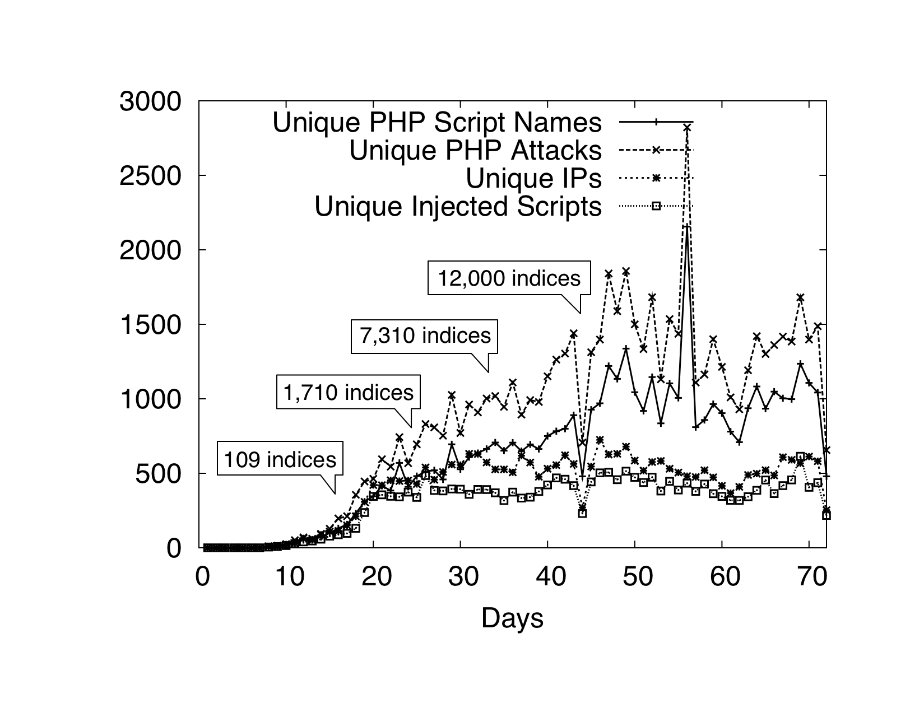

IT security
There are many aspects to “computer security”. For example, look at the following items. Each one is related to computer security, but they cover a wide range of distinct subject areas:
-
Secrecy. Much of modern-day commerce relies on secure transfer of information, and this security relies on exchange of secret keys. In addition, we often just want things to be secret, and encrypt documents to ensure this.
-
Insecurity. Most computer systems are dangerously easy to subvert, and it is a scary world out there! Apart from an adversary gaining some level of control over your system, consider the insecurity you might feel when you sign a contract, and then the other party doesn’t. Sometimes our concern is not with secrecy, but with subtleties like non-repudiation (you cannot deny that something happened afterwards).
-
Safety/control software and hardware. Operating systems and distributed systems are complex entities, and various techniques for improving the security of such systems could be examined.
-
Assurance. How can we convince ourselves (or our employer) that the computer system is to be trusted? Building assurance is best done by adopting standard, or formal methods to confirm, specify and verify the behaviour of systems.
-
Networks and protocols. Some aspects of security are determined by the way in which we do things (the protocol), rather than what is actually done.
-
Mathematical, physical and legal. Some aspects of computer security require an appreciation for various mathematical, physical and legal constraints.
-
Security models. These models provide formal (read mathematical) ways of looking at computer security in an abstract manner. By adopting a formal security model and showing it to be secure, if your software components comply with the model, you can be sure of the security of your system.
Often the same security problems that occur in society reoccur today in computer systems: there are many examples of computer-based security activities that we can find by looking at society, or by studying history books. For example, confidentiality problems result in concerns about locks, and encoding. Integrity problems result in concerns about signatures, and handshakes. In each of these, we can see simple examples from society, and the computer-based versions follow the same lines (only a million times faster).
The History of Herodotus
For Histiæus, when he was anxious to give Aristagoras orders to revolt, could find but one safe way, as the roads were guarded, of making his wishes known; which was by taking the trustiest of his slaves, shaving all the hair from off his head, and then pricking letters upon the skin, and waiting till the hair grew again ... and as soon as ever the hair was grown, he despatched the man to Miletus, giving him no other message than this: “When thou art come to Miletus, bid Aristagoras shave thy head, and look thereon. Now the marks on the head were a command to revolt...
Histiæus ensured confidentiality by hiding his message in such a way that it was not immediately apparent, a technique so clever that it was used again by German spies in the 1914-1918 war. This sort of information-hiding is now called steganography, and is the subject of active research. Cæsar encoded messages to his battalions, a technique now called cryptography, and the use of agreed protocols between armies to ensure the correct conduct of a war is seen over and over again in history. Both of these activities (cryptography and protocol analysis) are active topics in the security area.
You will notice that we have begun with examples taken from the world of warfare, and throughout this course, you will find references to military conduct, procedures and protocols. This should not be a surprise to you given the nature of security.
The computer-based landscape
The landscape of IT security encompasses a wide range, from the world-wide to the microscopic. IT security can apply to governments, world bodies, organizations, small businesses, or even you, or things you barely notice around you.
Consider the infrastructure within a country providing the things we have become used to, for example, electrical power, sewage, water-on-tap, gas reticulation, the phone system. Most of these infrastructural elements run pretty well, but the results when they stop can be catastrophic[^1]. Even when the infrastructure is working well, directed attacks can make your life hell. Not just you, but your company, your city, your country, your world.

You can view the landscape as that of “Information warfare”. This “war” is going on every day, continuously, attacking every visible machine, both on and off the Internet. In the screenshot above, we see a real-time display of the Norse threat intelligence system , monitoring Internet attacks as they happen.

In the graph above, we see attacks on a web site that was set up using a new, never used before, Internet (IP) address . As you can see, after about 10 days, the site got discovered, and the attacks started, growing quickly until stabilizing at about 1000 attackers per day. Individual attacks may last a few seconds, right up to continuous - all-day attacks.
In computer security, the term “attack surface” refers to the sum of all the different mechanisms (the “attack vectors”) an unauthorized user (the “attacker”) might use to gain access, or manipulate a system. In this course we will look at information warfare in detail, looking at these attack surfaces, and how to defend them. The list of surfaces that we will look at are, in order:
-
people: the ways in which people are manipulated.
-
complexity: complex systems are large, and may have a large number of attack vectors.
-
cryptography: underpinning much of our IT world is the use of cryptography. It may be possible to directly attack the cryptographic schemes.
-
underlying communication systems: many of our systems are constructed using physically remote devices, and the physical communication between them may be attacked.
-
high level communication systems: the Internet is based on the Internet Protocols (IP), which were not designed with security in mind.
-
web application architecture: these days, web based applications dominate the world, and they have well known structures, with a range of attack vectors,
-
machine architecture: sometimes attacks are directly on the machine’s hardware, or operating system.
In addition, we will look at these surfaces within contexts of personal safety, organizational safety, and even infrastructural safety.
Frameworks
Because security is multi-faceted, it is difficult to find a way to think and reason about it. In this course, if we were just to list security issues, the list would have thousands of entries, and be chaotic. We need a framework in which to place our discussion, and begin to categorize the IT landscape.
What is a framework for thinking about this? Perhaps Ross Anderson’s PIMA:
-
Policy: what is supposed to happen - what are the rules,
-
Incentives: what are the motives of all the participants,
-
Mechanisms: what are the specific techniques being used,
-
Assurance: what reliance can you place on each mechanism.
If we were to use a framework like this, whenever we consider a security issue, we look at it in the context of each of these four items.
Another framework: I asked a friend (Jeff Carr) who has worked for years in security at the level of large companies, and countries, and he came up with this framework, which reflects perhaps a “corporate” view, similar to the framework promoted by IBM :
-
Policy/Strategy: what are the policies or strategies that are being used?
-
Legal Requirements: what are the legal requirements that bound the system?
-
Assets: what is to be protected, and in what context - is it CIA (Confidentiality, Integrity, Availability) or some other issue?
-
Risk management: can we view this clinically, statistically, as risk management? Perhaps we categorize our assets with respect to their importance and use this to aportion effort in securing the assets.
-
Security architectures: what systems/architectures are used or appropriate for the system?
-
Compliance: what level of compliance is mandated?
In this framework, there is perhaps less emphasis on mechanisms, and more on authority, and high level management views.
In our course, I will be looking at the current set of weak attack surfaces, and in each case, I will look at the issues for a particular surface from some viewpoint or other, and will try to use the appropriate framework words as needed.
Finally...
In any of these, you can see that there are a wide range of activities (and hence jobs): Information Security Engineer, IT Security Architect, IT Security Specialist, IT Security Analyst, Business Security Manager, Security Research (Technical). This is good for those of use who have an interest in security as an occupation - endless work in front of us. But perhaps overall it is bad for the world in general...
[^1]: In 2000 I worked at the University of the South Pacific in Suva, Fiji during a coup, and some villagers sabotaged the Monasavu dam, cutting power to the entire country. For over three months we lived without power, although the electricity department did manage to get some generators going to provide 20 minutes of electricity to Suva every day. No phones, no shops open, no lights, eventually no water, no news, no TV - it was a scary time.